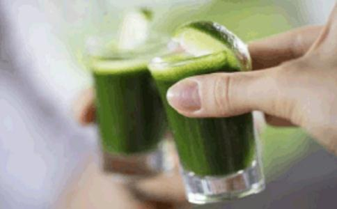

人真的需要动物蛋白吗？答案是：不需要！
说起蛋白质，第一个在你脑中浮现的是什么？相信很多人脑中浮现的会是牛肉和鸡蛋。
很多人都会觉得，动物蛋白是刚需。所以在解答人是不是真的需要动物蛋白之前，我们要弄明白，为什么你觉得动物蛋白那么重要？
为什么你觉得动物蛋白那么重要？ 在大多数人的潜
不管你承不承认，吃肉是个从未被人提及的“文化”。父辈们都是苦过来的，小时候逢年过节才吃得上一块肉。所以肉在老一辈人的眼里，是
父辈小时候的经历，让他们在经济条件变好的时候，尽可能多的去买肉吃，弥补小时候没有吃到肉的遗憾。而在这种环境下成长的孩子，也会下意识觉得吃肉是刚需。即使大多数人根本没想过自己为什么要吃肉，只是觉得饿了要吃肉，就像水喝多了要撒尿一样自然。
综上所述，你那股想吃肉的洪荒之力，感觉自己不吃肉就会少了点什么，只是心里在作怪。
解决了这个思路上的小问题，下面我们一起来看看，动物蛋白是不是刚需？从了解什么是蛋白质开始！
动物蛋白是刚需吗？蛋白质就是像这样一个个小氨基酸组成的长链
蛋白质由氨基酸组成。每隔一段时间，蛋白质就会磨损而需要更替，这时我们就需要摄入新蛋白质。新摄入的蛋白质在经过消化后，能提供新的氨基酸小分子来制造新蛋白质，汰旧换新。所有食物的蛋白质品质，主要取决于这食物能提供多少必需氨基酸，以及是不是容易吸收。（内容摘自：《救命饮食》）
植物蛋白v.s. 动物蛋白
动物蛋白质和人体蛋白质很相似，它们所能提供的每一种必需氨基酸的量，非常接近我们人体所需量。但是在消化动物蛋白时，身体要消耗更多能量，才能把动物蛋白分解成单独的氨基酸分子，然后重组成新的蛋白质后使用。
相比之下，虽然某些单一植物中的植物蛋白可能会缺乏一种或几种必须氨基酸，但整体植物性食物，仍然具备人体所需的所有氨基酸。（内容摘自：《救命饮食》）有些植物如
早在去年十月，世界卫生组织就宣布将火腿、培根等加工肉制品列为“致癌物”，即致癌程度最高的物质，使其与石棉、香烟、砒霜“为伍”。而新鲜红肉，这种极富优质动物蛋白的食材，被列为“较可能致癌物质”，仅次于砒霜这类物品的致癌程度。
但是不单单是红肉和肉类加工制品，吃任何动物蛋白都会大大增加患癌症的机率。在补充动物蛋白的同时，吃进去的不只是动物蛋白质，还有饱和脂肪酸、胆固醇和过量的荷尔蒙和抗生素。这些物质都会打乱身体的平衡，加大患结肠癌、心血管疾病的风险。而当你在摄入植物蛋白的时候，会不经意地给身体注入很多好的养分，比如对人体有益的维生素、抗氧化分子、纤维素和优质的矿物质。
不吃动物蛋白，好的植物蛋白有哪些？ 说起植物蛋白，首当其冲的就是西兰花了。由上图可以看出，100卡路里的牛肉中含有的蛋白质为8.0克，脂肪为7.4克，而同等卡路里的西兰花蛋白质含量高达11.1克，脂肪含量却只有同等热量的牛肉的二十分之一。（增肌减脂可以不用吃牛肉了，吃西兰花就好了）而且西兰花中还含有很多人体所需的微量元素和矿物质，多吃可以预防疾病，巩固
蒸完南瓜后的南瓜籽终于可以利用起来了~ 你还不知道吧，100克的南瓜籽可是含有约33克的蛋白质，比同等重量的牛肉碎还多7克！高蛋白质使南瓜籽成为任何沙拉和点心的绝佳伴侣。（但是因为南瓜籽脂肪含量比较高，还是不适合多吃噢）
当然南瓜籽不仅含有丰富的蛋白质，其中所含的色氨酸和谷氨酸还能有效抑制
藜麦含有完美的蛋白质，可谓“谷物之王”。100克生藜麦含有14.12克蛋白质。如果你将这种谷物煮熟后与几根
杏仁恐怕是最棒的一种零食，无论从其蛋白质含量还是营养密度来看。100克杏仁含有21.43克的蛋白质，而谈到营养密度，就不得不提杏仁中一种叫顶部螺母链的物质，它们会使你长时间有饱腹感。杏仁也是任何点心或者大餐的绝佳搭配。（但是因为杏仁脂肪含量比较高，还是不适合多吃噢，一天抓一小把就好了）
我们都知道菠菜是一种特殊的绿叶菜。从大力水手的秘密武器到高级餐厅的昂贵沙拉中，菠菜都扮演了重要的角色。100克的菠菜含有2.86克的蛋白质。它富含类黄酮，一种含有抗癌特性的物质。而且其中含有的维生素K能确保有健康的神经系统和大脑功能；维生素A能加强免疫力和促进皮肤新陈代谢。
100克
当然不仅仅是以上举例的那些，各种豆类、豆科蔬菜、坚果、深绿色蔬菜都富含蛋白质。如果可以把这些食物都加到日常